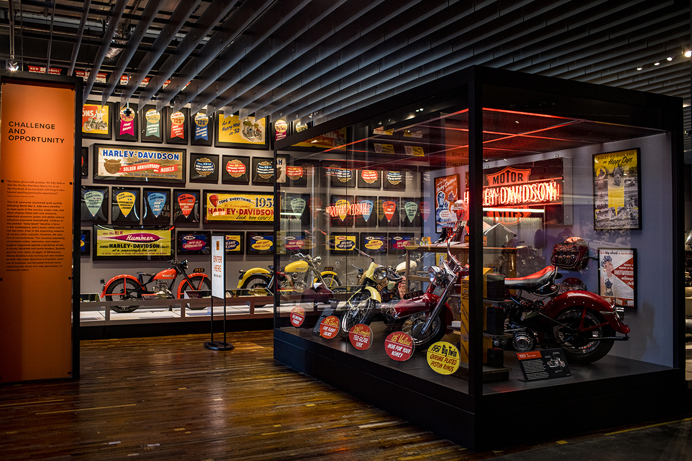

THE LEGENDARY
The Motorcycle Galleries
As you begin your tour of the Harley-Davidson Museum® you'll find yourself on the Museum's second floor staring down a line of bikes, three wide and 180 feet long. These bikes begin to tell the story of the company's first fifty years. Each bike in the gallery was specifically chosen for its noteworthy heritage, as well as its unique expression of signature Harley-Davidson elements – beauty, performance, functionality and style. Complete your trip through the Harley-Davidson collection of classic models from the late 1940’s to the present in the first-floor gallery.